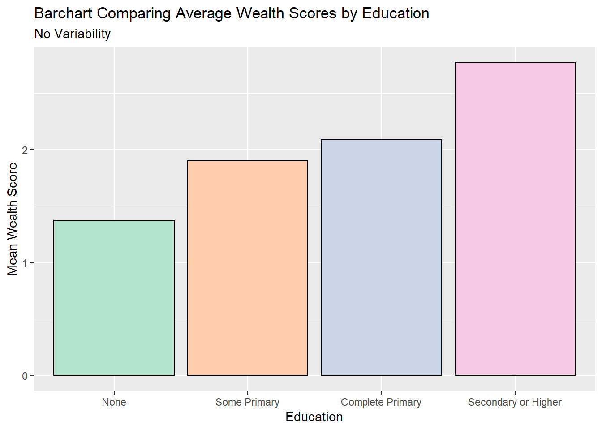
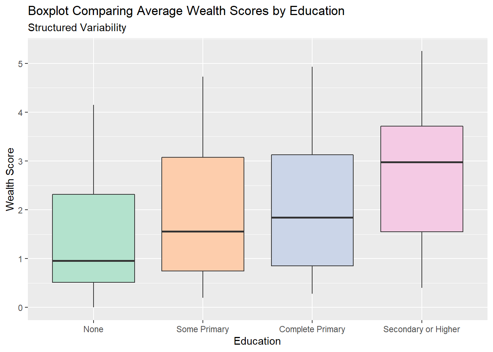
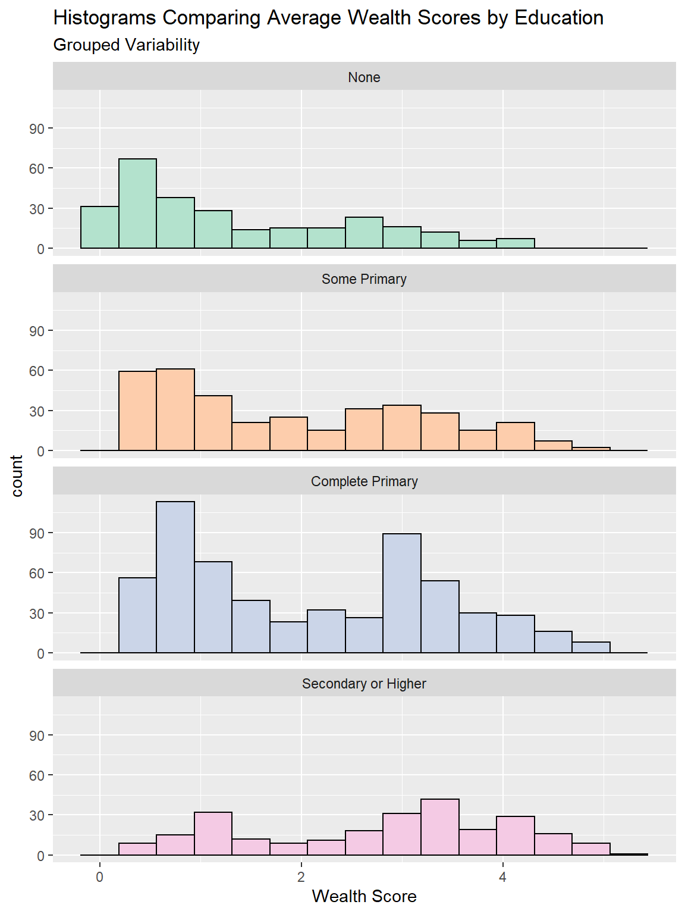
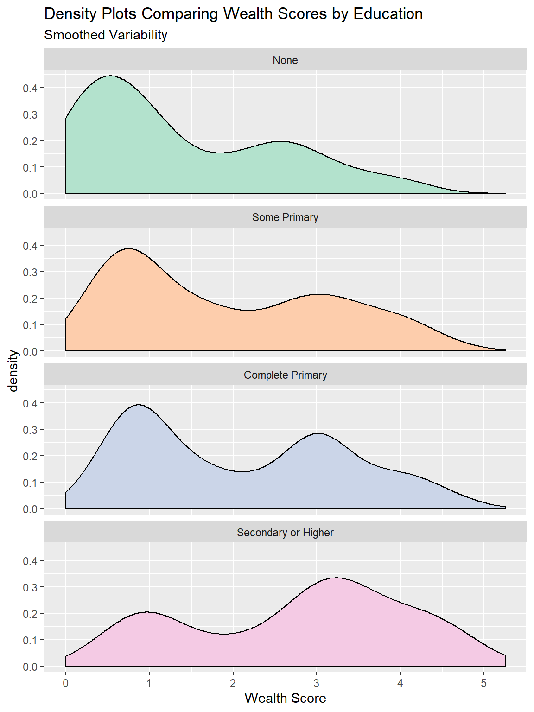
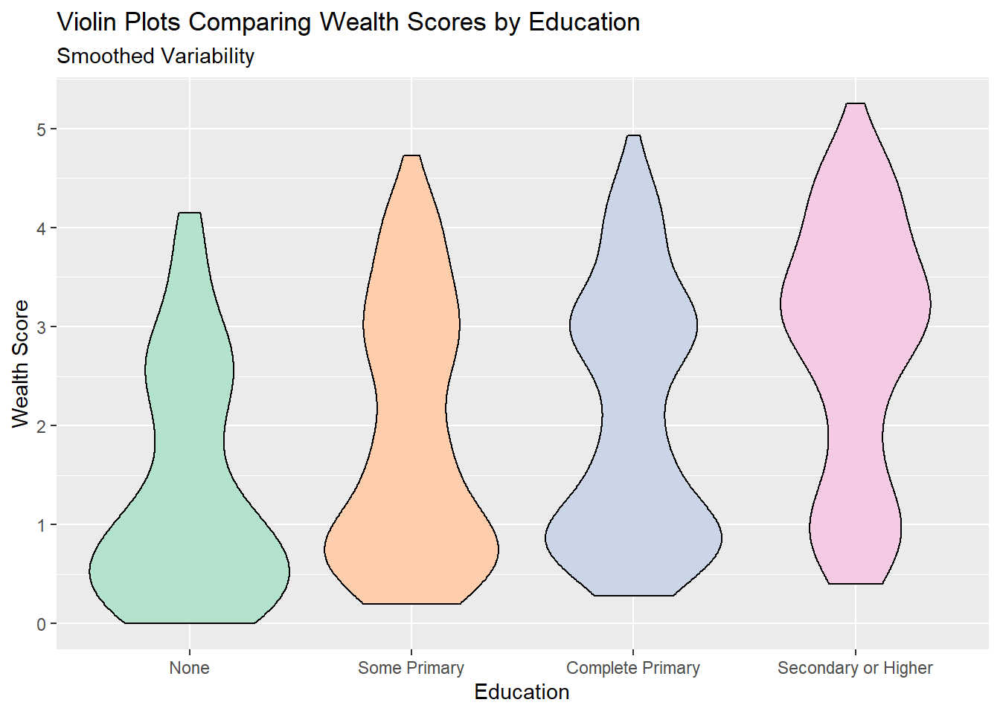
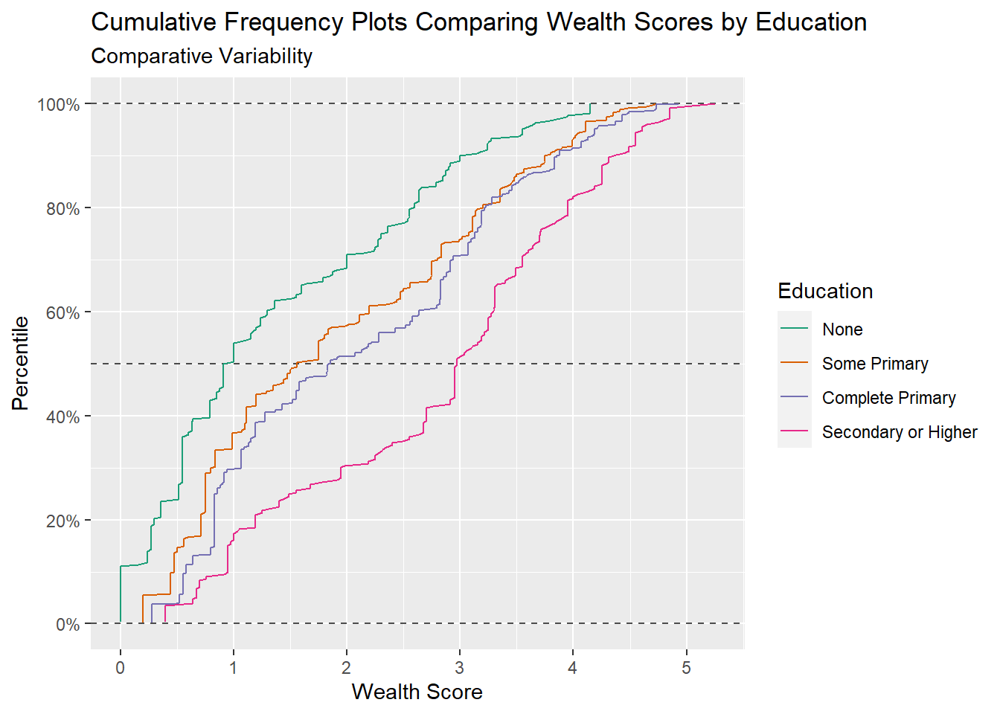
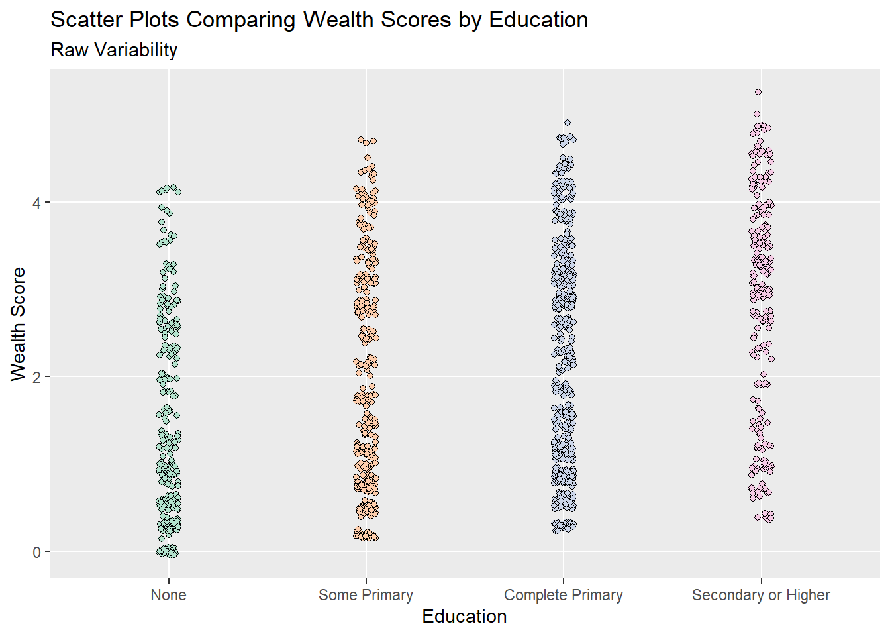
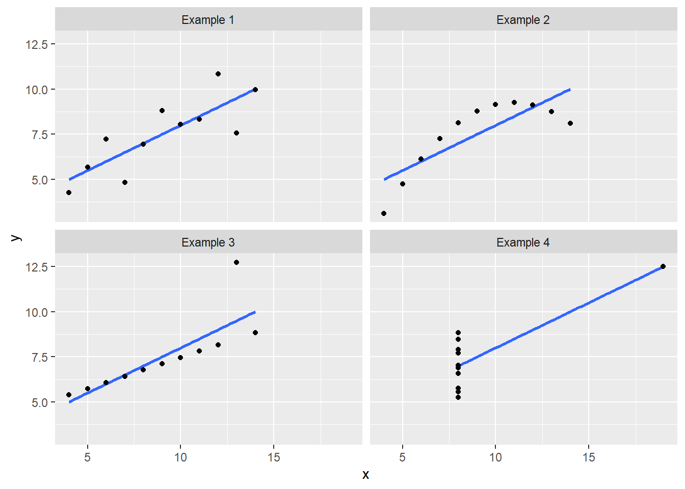

Chapter 5 Precision and variability
Sam Dumble
5.1 Introduction
When presenting results it can be tempting to focus solely on the main patterns and trends we can identify through our analysis. But we always have to bear in mind both the levels of uncertainty we have in those trends, and the underlying variability that will exist away from those trends. Incorporating these ideas of precision and variability into the way we present our results, helps to prevent our results being taken out of context or over-interpreted.
5.2 Video
Figure 5.1: https://www.youtube.com/l-KPt6b20SQ
5.3 Precision vs Variability
When considering this topic we need to be clear on the difference between precision and variability. Although these concepts are related, they tell us two different things both of which are important:
Precision refers to the uncertainty in the estimates or statistics that we calculate from our data. As the amount of data we have increases the amount of precision we have increases. For example - if we were trying to estimate mean household size based on a sample size of 1, then the precision in that mean would be extremely low. But if we had a sample size of 10,000 households we could estimate the mean from then we would have a much more precise estimate.
Variability refers to the underlying variability in the sample, and in the population. This is not impacted by increasing the sample size, other than that increasing the sample size will increase the precision in our estimates of variability!
5.4 Precision
5.4.1 Confidence intervals vs. standard errors
When displaying precision around estimates there are two commonly used measurements - confidence intervals and standard errors. Both of these are useful, and they are highly related to one another, but it is extremely important to label your presentation so it is clear exactly what measure of precision is being shown. Different software packages make different choices about exactly how to display!
The standard error can be considered as “the standard deviation of the estimate.” This is a function of the standard deviation in the data and the sample size. As our sample size increases the standard error of the estimates decreases. The ratio of the estimate to the standard error is what helps us determine statistical significance in hypothesis testing, although it can be tricky to intepret standard errors as numbers on their own.
This is why using confidence intervals are general preferred - these provide the range of values where we think the “true” value of the estimate would lie. In general it is conventional to present results using a 95% confidence interval, this has the nice statistical property of usually being equal the mean +- two times the standard error. As we increase the level of confidence of our interval, to 99% or 99.9%, then width of the confidence interval will increase - to be more confident that we have captured the true value in our interval we need to allow for more possible options.
5.4.2 Interactive Demo of Precision vs. Variability
5.4.3 In tables
5.4.4 Around trends
When showing the confidence interval of a trend, visually this is better represented by showing a shaded region around the trend line, rather than through use of multiple error bars, which would be misleading or messy, or through use of separate lines, which are harder to interpret and less visually intuitive.
5.4.5 Overload of error bars?
When presenting plots with lots of error bars this can quickly start to look messy and hard to interpret. In cases with lots of treatments, e.g. a varietal screening trial with 100+ different treatments each with 4 replications, presenting a single measure of precision - a pooled estimate from a statistical model - may be beneficial as it will allow focus to be placed onto the results, whilst still maintaining a display of the precision.
5.5 Variability
5.5.1 Plots which can display variability
There are lots of different plots available which can show variability and compare variability across groups. Error bars should never be used as a way of showing variability. Not only do they not provide a strong visual summary of variability the conventional use of error bars is to represent precision, so it is extremely likely your plot will be misinterpreted by some or all of your audience. (ref: https://journals.lww.com/jpancreatology/Fulltext/2019/09000/A_note_on_error_bars_as_a_graphical_representation.2.aspx)
Many of the commonly chosen plot types, such as bar charts or line graphs, do not allow for the assessment of variability. This is a problem when the audience wants to understand more about the data itself, and how strong these trends are in relation to the overall variability. Ref: (https://journals.plos.org/plosbiology/article?id=10.1371/journal.pbio.1002128)

Different options could include
5.5.1.1 Boxplots

Boxplots provide a very structured view of variability, by illustrating the interquartile range, the minimum and maximum value as well as any outliers. This structured nature makes them easy to make comparisons across groups -in the example above we can see clearly the variability in wealth, as represented by th size of the boxes, is very similar for all education levels. Boxplots also can clearly show trends - again we can clearly see the median wealth, the middle of the box, increasing as education increases. This ease of interpretation makes them a very popular choice for displaying data.
5.5.1.2 Histograms

Histograms show us the shape of the distribution, by grouping together similar values into bars. One aspect of this distribution is the variability, although we cannot infer comparisons of variability from histograms quite as easily as we can with boxplots. However histograms are especially useful if we have non-unimodal distributions. We can see this for the “complete primary” group in the plot above, which seems to have two distinct peaks of the wealth score. Because of the structured way boxplots summarise variability, this is notsomething we could detect from a boxplot. A note of caution - the bin size of histograms is an abritrary and subjective decision. Changing how wide each bar is can often change the shape of the distribution substantially.
5.5.2 Density plots/ Violin Plots

Density plots are very similar to histograms, except instead of grouping the data into bars a smoothing algorithm is used to show the approximate distribution as a continuous function. These have many of the same pros and cons as histograms, but unlike histograms they are not reliant on setting bin size but they are very volatile to changes when sample sizes are small.

Violin plots take the density plots, rotate them 90 degrees and then mirror them. These are designed to make density plots easier to compare across multiple groups.
5.5.2.1 Cumulative Frequency Plots

Cumulative frequency plots are a good way of comparing results across groups for the full range of values, they can show whether differences in groups are consistent across the range of values or whether differences between groups are being driven solely by differences at the extremes, or middle. Summary statistics like the median and interquartile range can also be directly inferred from these type of plots.
5.5.2.2 Scatter plots
 Scatter plots are often the best way of showing variability when the data is fairly small in size, with a small number of points scatter plots make it easy to infer patterns, trends and variability. But this quickly gets more difficult as the size of the dataset increases. For example in the plot above, even with a jittered scatterplot, it is very difficult to see any differences in wealth by education because there is so much data.
In some cases scatter plots can be very useful for showing aspects of variability which can easily be missed by conventional statistical summaries - for example in the classic ‘anscombe’ quartet, where all four of these plots have the same linear relationship and the same variance. But the nature of their relationship, and how the variability is structured across the range are very different.

5.5.3 In tables. Is standard deviation always the answer?
In journal articles it would be expected to use the standard deviation to summarise variability. However, as illustrated in the plots above, this value does not tell the whole picture about variability - in isolation it is only really useful if our data perfectly follows a known statistical distribution, and this is rarely the case. Plots are a much better way of illustrating variability in data!
But where presenting summary statistics, particularly to non technical audiences, standard deviations are often even less useful as they are not commonly well understood in their own right. On the other hand percentiles can be quite well understood by many people - so consider using the lower and upper quartiles as a way of summarising variability, although framed as the “25th percentile” and “75th percentile,” so they may be better understood. Equally it can be useful to talk about the “5th” and “95th” percentiles as well. The minimum and maximum values, although almost universally understood, are actually quite poor summaries of overall variability. These values are solely dependent on one individually high and one individually low value, and unless you have taken a census of all possible values, then they do not provide much information about variability. If you were to re-do the data collection procedure again you would likely obtain very different results. Hence why considering the 5th or 95th percentiles may provide a better, more generalisable summary of your results